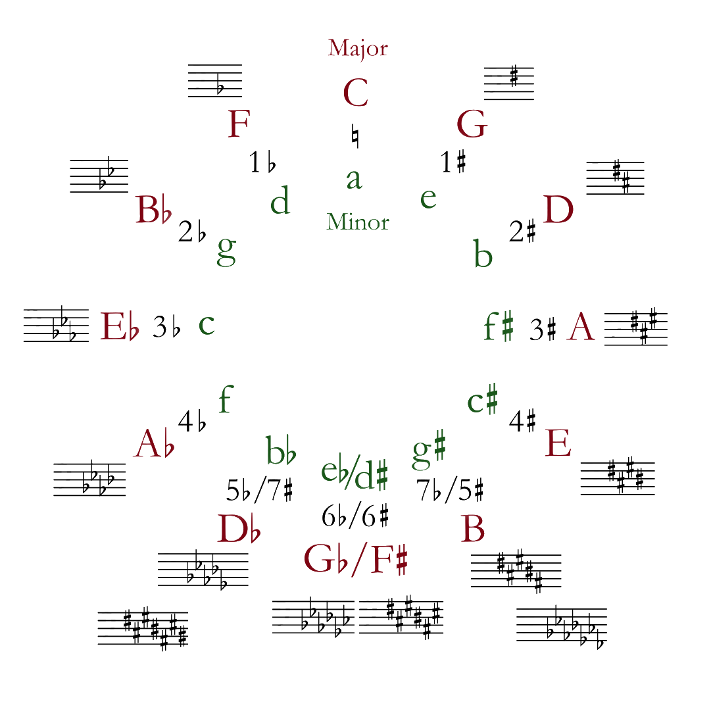

Howdy! My name is Morgan Roberts and I am a Junior Texas A&M University Student who is currently studying
Computer
Science in College Station. As an aspiring computer scientist, I have developed a passion for the topics of
cryptography
and quantum algorithms and I am excited for what the future holds. My Hobbies include programming,
travelling, playing
the guitar, language-learning, and being the loudest and proudest member of the Fightin’ Texas Aggie Class
of 2023!
Image of me
I was born and raised in the small but fast-growing city of Longview, Texas. I attended Longview High School
where I was
enrolled in the International Baccalaureate Programme and eventually graduated with both a high school and
International
Baccalaureate Diploma. Early on in high school, I accidentally discovered the concept of vectors and
matrices from a
video game, which stirred me to study linear algebra outside of school. I discovered the practical
applications of the
subject in areas such as physics and computer science and it was fascinating enough to convince me to write
my high
school thesis on the application of limits on parametric equations. I can genuinely say that it helped to
shape my
current aspirations in the field.
On top of my academic pursuits, I have a deep interest in music theory and its specific uses on the guitar.
Although I’m
still an ameteur guitar player who only recently picked up the instrument, I’ve realized that there is a
great deal of
satisfaction in practicing and playing it. Prior to beginning, I hadn’t realized just how applicable music
theory is as
well as how mathematically involved it is. I’m eager to continue learning and studying it as a hobby.

Although I don’t do it as much as I would like to, I also enjoy travelling. Here are some photos taken by
yours truly!